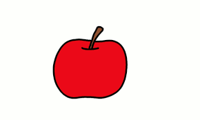
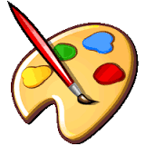
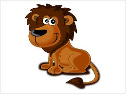
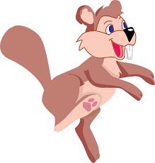

Images that don't even look like buttons can also be links. Find the image below that is a link and click on it. (Hint: look for the mouse cursor changing to the hand shape when on top of the link.)



